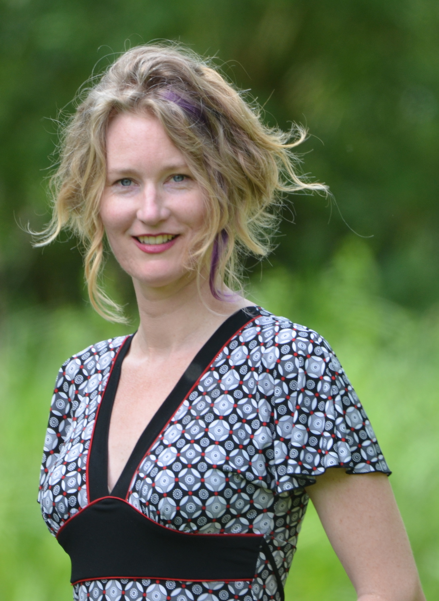

|
|
|

© Dieter Lukas
|
Corina Logan (she/her)
Senior Researcher
Department of Human Behavior, Ecology and Culture
Max Planck Institute for Evolutionary Anthropology
corina_logan [at] eva.mpg.de
Twitter: @LoganCorina
Home | CV | Lab | Ethical publishing

|

|
|
|
Hiring strategy = incentivize open research and reduce barriers for people from equity-seeking groups
Incentivize open research
To reduce “traditional” barriers to conducting open research, we must incentivize open research practices, particularly for early career researchers who want to engage in open research practices, but often feel #BulliedIntoBadScience. I positively value open research practices in job adverts (see the yellow highlighting in the adverts below)
Reduce barriers for people from equity seeking groups in academia
To attempt to counteract my implicit biases, I try to build into the infrastructure of the hiring/selection process ways that prevent me from relying on implicit biases to select team members.
- I make sure the language is feminine-coded which has been shown to encourage female applicants and not to deter male applicants
- I avoid buzzwords and instead state needed skills rather than trainable skills
- I ensure that consideration of diversity is an active part of the recruitment process and not just an afterthought (see the purple highlighting in the adverts)
Grackle project adverts that incorporate these goals
After the advert, now what? Strategies for interviewing and selecting candidates, and creating a more inclusive environment
Interviewing
Before starting an interview, read 5 ways to combat implicit biases. 1) slow down, 2) reconsider, 3) question, 4) remember, 5) detect.
Recruitment goal: undergraduates
Our goal is to recruit a diverse team of undergrads (note: ASU undergrads in STEM=65% white, 36% female, 2016 data. Which was consistent with ASU’s goal in 2017. Therefore, it is very important that we seek out people from equity seeking groups in STEM when advertising research opportunities to ensure we have a diverse pool to choose from.
We target our recruiting efforts to equity seeking groups (e.g., the local SACNAS chapter) because we know that people from equity seeking groups haven’t necessarily had access to or been trained to seek out research opportunities. Therefore, we invest more in reaching out to these groups and sharing what research experience can do for their career.
We tend to receive a few applications at a time every month or so. Our strategy is to accept students who have submitted complete applications (unless there is something in their application that suggests they wouldn’t be a good fit for the project) until the lab is full, and then put subsequent applicants on a waiting list and interview them when an opening arises.
We interview applicants, but only accept those that keep our overall team percentage (over the course of our whole project) at a minimum of 35% of people from equity seeking groups. So far, we have been able to accept everyone who has submitted a complete application.
Making team members feel included
- Give fun talks. Sucheta Nadkarni from the Judge Business School said in her #PivotPoint talk at the University of Cambridge Graduate Union in 2017 that fun talks make people feel more included. Power talks alienate audiences while tentative talks build trust. Use humor. Be open.
- Prestige = subjectively defined by the privileged #OpenGlobalSouth
Writing unbiased letters of recommendation
- Do not use the candidate’s name. Refer to them as “the candidate” or “the applicant”
- Use “they” rather than “she” or “he”
- Make sure the letter is masculine-coded because this is perceived as more impressive
Why this matters & what to do about it
The problem with using and promoting metrics in selection processes is that people with more privilege are much more likely to have access to opportunities that allow them to obtain higher scores on these metrics (e.g., How to be an Antiracist by Kendi). However, these metrics have nothing to do with the excellence or the quality of the research. For example, most people who publish in the more well known journals are white (Maas et al. 2021, Wu 2020), which indicates that the journal’s process for deciding to accept an article is likely racist. This is not surprising given that most editors are white men from the US or the UK (Palser et al. 2021). Therefore, relying on publication metrics as an indicator of research excellence is racist and sexist.
Apply antiracist action to selection processes from the application adverts to educating the evaluators. For example, evaluators of applications need explicit instructions to ignore metrics and address their implicit biases, and the infrastructure of the evaluation sheets should be changed such that it prevents reviewers from falling back on implicit biases.
- Women and Global South strikingly underrepresented among top‐publishing ecologists: “Many opportunities for increasing representation of women and scientists from the Global South are straightforward and therefore should be implemented immediately in scientific best practice” Maas et al. 2021
- “Editorial positions in the 50 most impactful neuroscience & psychology journals are not balanced in gender or geographical representation” Palser et al. 2021
- “Systemic racism refers to the well documented fact that most of our institutions—in politics, law, education, and health care, to name a few—are fundamentally organized according to assumptions and policies that work to the disadvantage of communities of color, and Blacks in particular.” Adia Harvey Wingfield, 2020
- Racism in science: we need to act now by Michael Eisen, Editor-in-Chief of eLife, 2020. “The reality is this IS a solvable problem: we have just chosen not to solve it.” “There is ample evidence that the entire system of science evaluation of which eLife is a part is structurally biased against Black scientists, and that significant changes are required to fix it.” “a system built around dispensing limited markers of prestige is fundamentally incompatible with true fairness”
- Best practices: recruiting and retaining faculty and staff of color from Western Washington University. Which includes: Job announcements shaped to attract diversity (p.16)
- Anti-racist hiring practices and our collective responsibility in this moment by Jessie Mawson, 2020
|
|
|